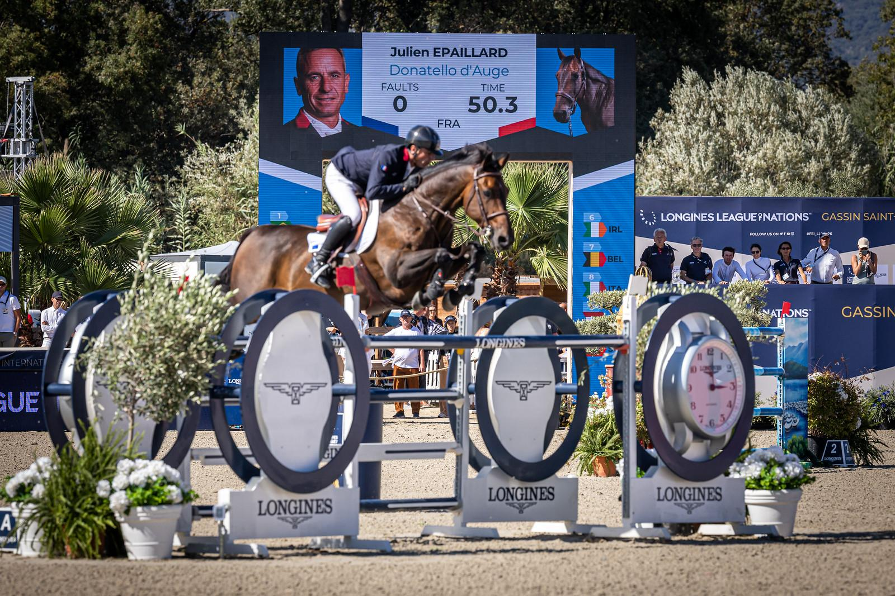

Épaillard para el crono en 35,79 s y gana el 3 Brasseurs Prize de Equi Seine
Julien Épaillard y Donatello d'Auge dejaron a más de cuatro segundos a Nicola Sers en el desempate del 3 Brasseurs Prize, prueba de 1,50 m del CSI 4* de Rouen.

Once binomios pasaron a la manga de desempate, y la prueba se decidió pronto. Épaillard recorrió la pista cubierta con «Donatello d'Auge» sin faltas y paró el cronómetro en 35,79 segundos, una marca que nadie se acercó a discutir.
El más cercano fue otro francés, Nicola Sers, con Eleven de Riverland. También hizo cero, pero tardó 39,85 segundos, más de cuatro de diferencia con el ganador. Le bastó para la segunda plaza.
El podio lo cerró el suizo Edouard Schmitz con Le Boss, que concluyó sin penalización en 40,83 segundos. Tres jinetes, dos nacionalidades en los puestos de honor: Francia y Suiza.
«Donatello d'Auge» es un castrado bayo Selle Français de 2013, hijo de Jarnac y Hello Pierville. La prueba, dotada con 57.200 euros, se disputó el viernes dentro del CSI 4* y CSI 2* de Equi Seine, en Rouen.
Los tres primeros acabaron a cero en el desempate, así que el cronómetro marcó todo el reparto del podio.
Por Lucía Valdeolmos